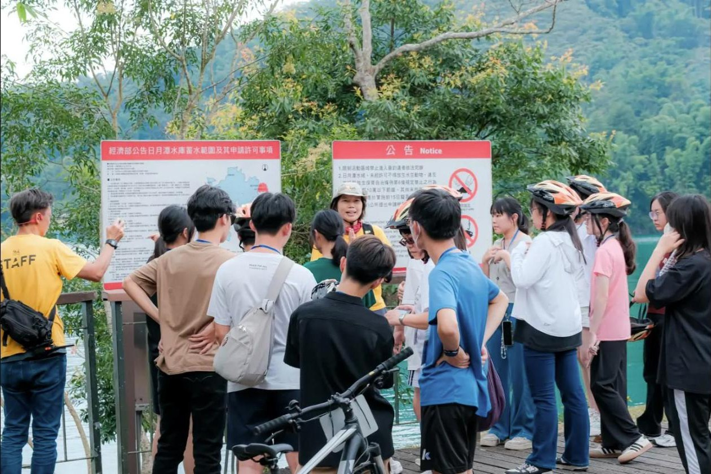
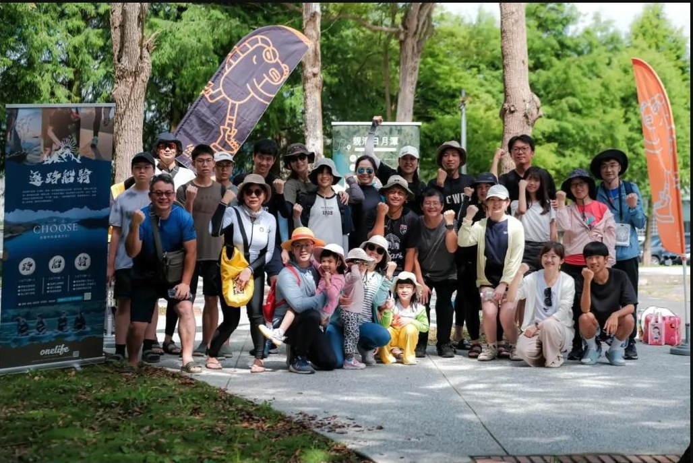

老師最在意的安全、保險、雨天備案，這一頁寫清楚。

戶外教育 · USR 計畫 · 職人探索營 · 畢業旅行
每校限 10 個名額，在地團隊帶領，不限年齡
每校限 10 個名額，在地團隊帶領，不限年齡
三種課程Programs
01
逐路船騎 經典版 · 一日
邵族白鹿傳說導覽、伊達邵自行車道騎行、SUP 立槳體驗。學生在旅程中思考生活與行動的意義。
國中以上 · 20–120 人 · 每人約 [價格帶]02
親清日月潭 · 半日
SUP 淨潭或步道淨山，撿拾、分類、秤重、記錄。學生親手做一次田野調查，數據帶回學校做報告。
國小中年級以上 · 20–80 人 · 每人約 [價格帶]03
USR · 大學合作 · 可客製
地方創生、永續觀光、水域安全教育主題。可搭配暨大、南開等校的課程，安排實習與志工培訓。
大專院校 · 每校限 10 名額 · 另議
安全與備案Safety
教練比例 1：8
全程穿救生衣，可坐姿划槳，不會游泳也能參加。教練具水域救生資格。
保險
含基本意外險，可依學校規定加保。保單影本可於活動前提供。
雨天備案
小雨照常，大雨或雷雨改室內課程或改期，不收改期費。前一天 17:00 前通知。
老師行前資料包
家長同意書範本、行前通知、裝備清單、交通建議，報名後一次給齊。
來過的學校Schools
竹山高中職人探索營 · 逐路船騎經典版 戶外教育及海洋教育中心南投共學團 · 逐路船騎經典版
戶外教育及海洋教育中心南投共學團 · 逐路船騎經典版
福智國中SUP 學生團訓